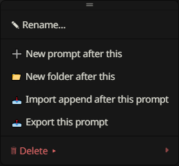
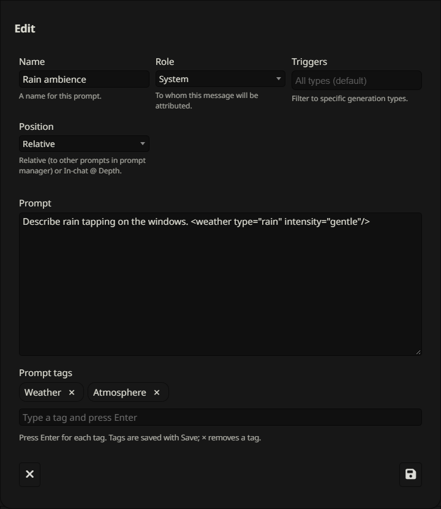
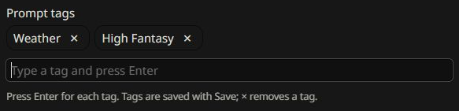
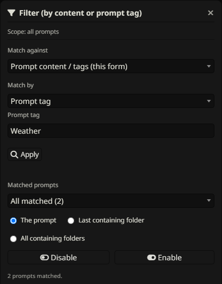
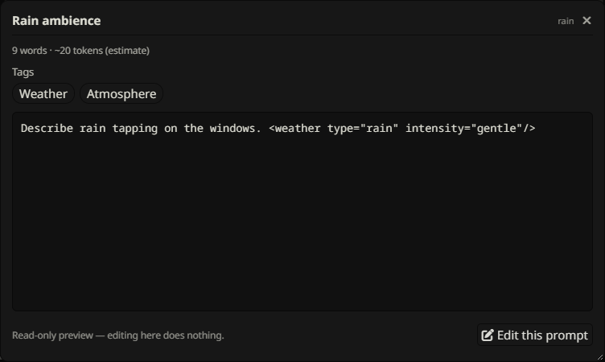
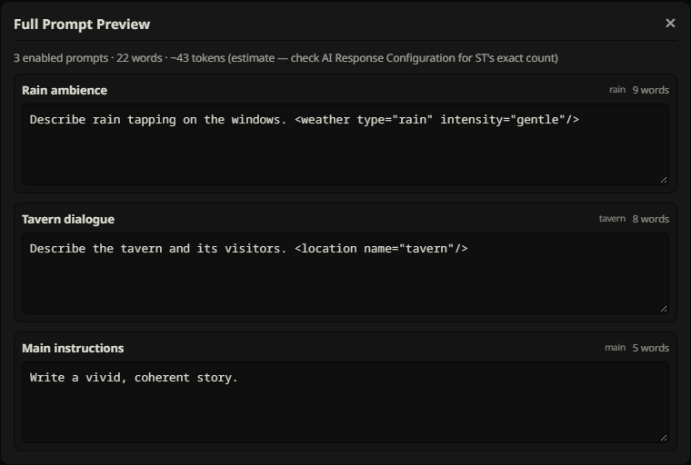

Prompts & tags
Create and edit native prompts, label them with multiple tags, and inspect their content without changing it.
Create & insert prompts


Use + Prompt in the toolbar for a new prompt, or a row’s ⋮ menu to place one precisely: New prompt inside a folder, New prompt after this, or New prompt after this folder. STPHE creates a uniquely named New Prompt and opens its native editor. Set its name and content there, review the native fields, then Save.
STPHE creates a native Prompt Manager definition and inserts it into the active list at the requested position. New prompts inherit other native fields from an existing non-marker template, so review role/injection settings before using them; available fields are controlled by SillyTavern.
Edit, rename & enable


The pencil opens SillyTavern’s native editor. Edit the prompt’s content and available native settings, then Save. The ⋮ menu’s Rename action also uses the native editing path so the name stays consistent in both interfaces. Some native marker entries do not expose an ordinary editable content field.
The prompt toggle sets its intended enabled state. A muted ancestor can still suppress it. Native changes are reflected in STPHE; press Refresh if the native list has not yet been read again.
Add & remove multiple tags


- Open a new prompt or edit an existing prompt.
- In Tags, type
Weatherand press Enter to create one tag. - Type
High Fantasyand press Enter again. Spaces are allowed inside one tag. - Use × on a chip to remove it, then Save the native prompt.
Leading/trailing whitespace is trimmed and duplicate tags are ignored case-insensitively: Weather and weather are the same label. Closing without saving discards the tag draft. Press Enter for each tag before saving; a comma-separated phrase is not a list of separate tags.
Tags are extension metadata keyed by prompt identifier. The same prompt identifier shares its tags across native presets. Tags are not appended to text sent to the model, and they are distinct from XML tags inside prompt content.
Use tags to filter & automate


Open Filter, choose Prompt tag, enter a full tag name and Apply. Matching is exact and case-insensitive. Select a target and Enable/Disable, or save a preset. In Auto Filter, use Prompt tag in the effect to choose which prompts a chat condition controls.
One tag criterion is entered at a time; there is no multi-tag AND/OR builder. The panel’s name search does not search tags. Use STPHE exports to preserve assigned tags; native-only exports do not include them.
View content & tags read-only


Click the eye on a prompt row to open View prompt. It shows the name, identifier, content, word count, estimated tokens, and read-only tag chips. “No tags” appears for an untagged prompt. There is no tag input or chip removal in this window.
The viewer can use up to 1100px width and 90% of the viewport height, with a resize corner and scrolling for long content. Click Edit this prompt to switch to the native editor. Close with × or the backdrop. Token counts are approximate (roughly one token per four characters).
Preview all enabled prompts


Toolbar Preview opens Full Prompt Preview. It reads currently native-enabled prompts in the tree’s top-to-bottom order, with a section for each name, identifier and content, plus word counts and an aggregate token estimate. Disabled or ancestor-muted prompts are omitted. A progress message appears while large lists are read.
This is a preview of stored Prompt Manager content, not a reproduction of the complete final API request. Dynamic markers, macros, character/world information and chat can be resolved differently by SillyTavern during generation. Use AI Response Configuration for SillyTavern’s own token count and native inspection tools for the final request.
Move, export, import beside & remove
A prompt’s move selector changes its folder. Its ⋮ menu offers Rename, New prompt after this, New folder after this, Import append after this prompt, Export this prompt, and Delete. Single-prompt export includes its tags and relevant folder metadata.
Delete offers Remove from list (not permanent) and Delete prompt PERMANENTLY. Removing from the list leaves the reusable native definition available; permanent deletion removes the definition and may affect other uses of that identifier. Read removal choices before confirming.